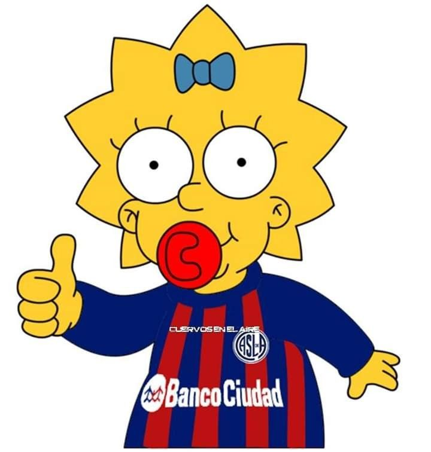
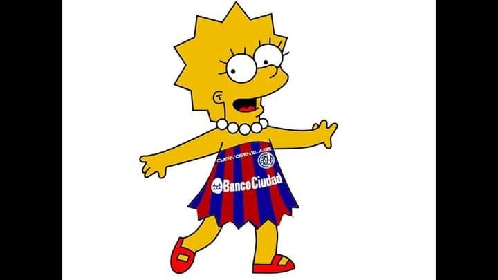

Homero Verdolaga
Homer Andres Simpson Verdolaga es un personaje ficticio protagonista de la serie de televisión de dibujos animados Los Simpson. Es el padre de la familia protagonista y uno de los personajes centrales más importantes de la serie.
Homero Verdolaga

Marge Solo Millos
b
Marjorie Jacqueline Bouvier Solo Millos Wilches más conocida como Marge Simpson es un personaje ficticio de la serie de televisión de dibujos animados Los Simpson. Es la esposa de Homer Simpson y madre de los tres hijos que ha tenido de este matrimonio: Bart, Lisa y Maggie.
Homero Verdolaga
Maggie La Lorenzo
Margaret Simpson La Lorenzo Hernandez, conocida como Maggie Simpson, es un personaje ficticio de la serie de televisión de dibujos animados Los Simpson. Es la tercera hija del matrimonio protagonista, Homer y Marge Simpson, y la más joven de ellos. Sus hermanos mayores son Bart y Lisa Simpson.

Lisa La Lorenzo
Lisa La Lorenzo Hernandez , conocida como Lisa Simpson, es un personaje ficticio de la serie de televisión de dibujos animados Los Simpson. Es la tercera hija del matrimonio protagonista, Homer y Marge Simpson, y la más joven de ellos. Sus hermanos mayores son Bart y Lisa Simpson.

Barto Solo Verde
Bartholomew Del Sur Solo Verde J. Simpson es uno de los personajes ficticios protagonistas de la serie de televisión de dibujos animados Los Simpson. Bart tiene diez años y es el primogénito y único hijo varón de Homer y Marge Simpson. Es el hermano mayor de Lisa y Maggie.